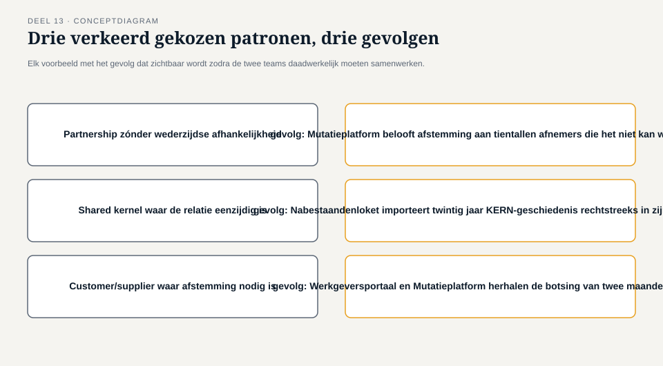
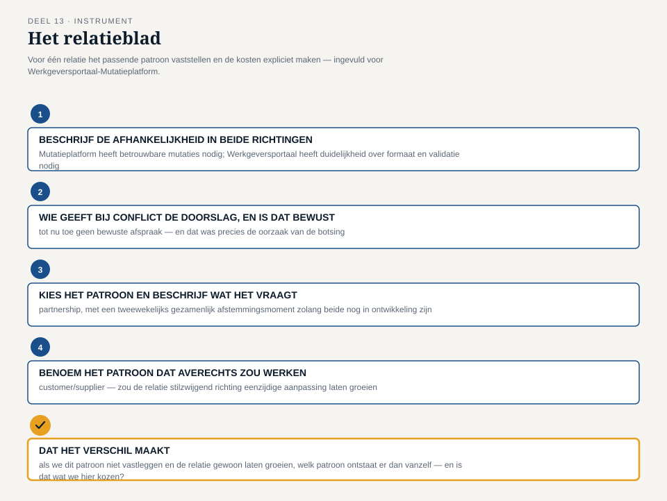

Deel 13 — Context mapping I: partnership, shared kernel, customer/supplier
Reader · Ductus-cursus Domain-Driven Design · niveau 2 (professional) · deel 13 van 30
13.1 Waar dit deel over gaat
Deel 12 leverde een investeringsvolgorde op, en met die volgorde ook Iris’ scherpe vraag: als het kerndomein zich over drie systemen uitstrekt, hoe verhouden die drie systemen zich dan precies tot elkaar? Dit deel — en deel 14 — geven het antwoord. Samen behandelen ze zeven patronen waarmee je de relatie tussen twee bounded contexts kunt typeren; dit deel neemt de eerste drie voor zijn rekening, elk verankerd in een relatie uit het Meridiaan-landschap die het team al kent uit de vorige twee delen.
Een context-mappingpatroon is geen technische koppeling en geen organigram. Het is een uitspraak over macht, afhankelijkheid en verantwoordelijkheid tussen twee teams die elk hun eigen model bewaken: wie past zich aan wie aan, wie deelt met wie, en wat kost die relatie aan doorlopende afstemming. Drie relaties uit het landschap staan hier centraal: Werkgeversportaal-Mutatieplatform, KERN-Mutatieplatform en Mutatieplatform-Nabestaandenloket.
Aan het eind van dit deel kun je:
- het verschil benoemen tussen partnership, shared kernel en customer/supplier in termen van macht en wederzijdse afhankelijkheid, niet in termen van techniek;
- per relatie beoordelen welk van de drie patronen past, en welk juist averechts zou werken;
- met het relatieblad een relatie tussen twee bounded contexts expliciet vastleggen, inclusief de kosten die het gekozen patroon met zich meebrengt;
- signaleren wanneer een team een patroon kiest omdat het makkelijk voelt, in plaats van omdat het bij de relatie past.
13.2 De casus: drie relaties, drie gesprekken
Uit het casusdossier: het contextmap-team heeft de investeringsvolgorde van deel 12 vastgesteld. Nu moet het de relaties tussen de drie systemen rond het kerndomein — KERN, Mutatieplatform, Nabestaandenloket — én de relatie met het Werkgeversportaal expliciet maken.
Foppe begint de sessie met een tekening op het bord: drie cirkels, geen lijnen ertussen. “Vorige keer wisten jullie wélk deel het zwaarst weegt. Vandaag beginnen we met tekenen: hoe verhouden deze drie zich tot elkaar, en wat kost die verhouding?”
Karsten is de eerste die een lijn trekt, tussen het Werkgeversportaal en het Mutatieplatform. “Deze twee kunnen niet zonder elkaar vooruit. Als wij iets veranderen aan hoe we een mutatie melden, voelt Otto’s team dat morgen. Als zij iets veranderen aan wat ze verwachten te ontvangen, voelen wij dat morgen. We zijn — of we willen het of niet — aan elkaar vastgeklonken.” Otto knikt, minder enthousiast dan gebruikelijk: “Dat is precies waar de botsing van twee maanden geleden zat. We waren aan elkaar vastgeklonken zonder dat we ooit hadden afgesproken hóe.”
Vera trekt de tweede lijn, tussen KERN en het Mutatieplatform, en aarzelt voordat ze spreekt. “Dit ligt anders. Wij kunnen het Mutatieplatform niet zomaar dicteren wat een dienstverband is — maar zij kunnen het ook niet zonder ons verzinnen. Als we hier niet oppassen, krijgen we straks twee definities van ‘dienstverband’ die allebei half goed zijn, precies zoals eerder.” Foppe onderbreekt haar niet, maar noteert een woord op het bord: “gedeeld.”
De derde lijn, tussen het Mutatieplatform en het Nabestaandenloket, trekt Daan zelf. “Wij hebben mutatiegegevens nodig om recht vast te stellen. Maar wij kunnen het Mutatieplatform niets opleggen — wij zijn niet de enige afnemer, en zeker niet de grootste.” Willemijn, die deze sessie is aangehaakt namens het Nabestaandenloket, knikt bevestigend: “We hebben dat in niveau 1 al gemerkt met KERN. Je kunt wachten tot je iets krijgt dat past, of je kunt zelf een vertaallaag bouwen. Voor deze relatie hebben we nog niet gekozen.”
Drie lijnen, drie heel verschillende gesprekken — en dat is precies het punt waar dit deel mee opent: eenzelfde soort relatie (“twee systemen die data uitwisselen”) kan drie fundamenteel verschillende patronen vragen, afhankelijk van wie welke macht heeft en wie van wie afhankelijk is.
13.3 Drie patronen, drie soorten machtsverhouding
Context mapping beschrijft niet alleen wát twee bounded contexts uitwisselen, maar vooral hóe de twee teams zich tot elkaar verhouden: gelijkwaardig en onderling afhankelijk, gedeeld eigenaarschap over een klein gemeenschappelijk stuk, of een verhouding waarin de een levert en de ander afneemt zonder gelijke zeggenschap.
Partnership
Twee teams die niet zonder elkaar vooruit kunnen, met een gedeeld belang bij hetzelfde resultaat, zonder dat de een boven de ander staat. Een eenzijdige beslissing van het ene team dwingt vrijwel onmiddellijk werk af bij het andere, en dat werkt in beide richtingen. Een partnership vraagt doorlopende, wederzijdse afstemming — niet omdat het beleefd is, maar omdat er geen andere manier is om niet uit elkaar te groeien. De relatie tussen het Werkgeversportaal en het Mutatieplatform draagt dit karakter: beide worden, min of meer gelijktijdig, binnen hetzelfde programma gebouwd, door teams die elkaar nodig hebben om vooruit te komen.
Shared kernel
Een klein, bewust afgebakend stuk model dat twee teams samen bezitten en samen onderhouden — niet omdat het handig is, maar omdat beide teams het anders dubbel, en mogelijk verschillend, zouden gaan definiëren. Een shared kernel is de duurste van de drie patronen in dit deel, niet in bouwtijd maar in doorlopende discipline: elke wijziging aan het gedeelde stuk vraagt overeenstemming van beide teams, en die overeenstemming moet blijvend georganiseerd worden, niet één keer bij de start. De relatie tussen KERN en het Mutatieplatform rond de begrippen “deelnemer” en “dienstverband” is hiervan het voorbeeld in het landschap — precies het begrippenpaar waarvan de botsing uit het casusdossier liet zien wat er misgaat als niemand het bewust deelt.
Customer/supplier
Een relatie waarin het ene team (de klant) afhankelijk is van wat het andere team (de leverancier) levert, zonder dat de klant kan afdwingen wat en wanneer er geleverd wordt — maar waarin de leverancier de behoeften van de klant wél serieus meeweegt in zijn eigen planning. Dit onderscheidt customer/supplier van een pure eenrichtingsafhankelijkheid: de klant heeft een stem, geen doorzettingsmacht. De relatie tussen het Mutatieplatform en het Nabestaandenloket past dit patroon: het Nabestaandenloket heeft betrouwbare mutatiegegevens nodig, maar is niet de enige, en niet per se de grootste, afnemer van het Mutatieplatform.

13.4 Wanneer een patroon averechts werkt
Elk van de drie patronen kost iets, en die kosten worden pas zichtbaar wanneer je een patroon kiest dat niet bij de relatie past.
Partnership toepassen waar geen wederzijdse afhankelijkheid bestaat. Zou het team partnership kiezen voor de relatie tussen het Mutatieplatform en het Nabestaandenloket, dan belooft het een mate van gezamenlijke afstemming die het Mutatieplatform, met tientallen andere afnemers, simpelweg niet aan elk van hen kan geven. Het resultaat is een belofte die het ene team niet waarmaakt en het andere team ten onrechte verwacht.
Shared kernel toepassen waar de relatie eigenlijk eenzijdig is. Zou KERN en het Nabestaandenloket een shared kernel aangaan in plaats van de anti-corruption layer die in deel 14 aan bod komt, dan importeert het Nabestaandenloket-team de complexiteit van twintig jaar KERN-geschiedenis rechtstreeks in zijn eigen, bewust klein gehouden model — precies het risico dat Willemijns team in niveau 1 juist wilde vermijden.
Customer/supplier toepassen waar in feite gezamenlijke afstemming nodig is. Karsten waarschuwt hier expliciet voor tijdens de sessie: als het Werkgeversportaal en het Mutatieplatform elkaar als klant en leverancier zouden behandelen in plaats van als partners, zou precies de botsing van twee maanden geleden zich herhalen — beide teams zouden voortbouwen op hun eigen aanname, in de veronderstelling dat de ander zich er wel naar zou voegen, zonder de doorlopende afstemming die de relatie feitelijk vereist.
Het patroon volgt uit de werkelijke machtsverhouding en wederzijdse afhankelijkheid tussen twee teams — niet uit welk patroon het minste coördinatiewerk lijkt te vragen. Dat laatste is precies de valkuil: een team kiest customer/supplier omdat het minder overleg belooft, terwijl de relatie eigenlijk een partnership is, of kiest partnership uit beleefdheid naar een team dat feitelijk gewoon leverancier is.

13.5 De werkvorm: het relatieblad
Het instrument van dit deel is het relatieblad: een sjabloon om, voor één relatie tussen twee bounded contexts, het passende patroon vast te stellen en de kosten daarvan expliciet te maken — zodat een gekozen patroon een besluit is, geen toevallige gewoonte.
De vier stappen
Stap 1 — Beschrijf de afhankelijkheid in beide richtingen. Wat heeft context A van context B nodig, en wat heeft context B van context A nodig? Een relatie waarin alleen de ene richting iets nodig heeft, wijst al vroeg weg van partnership en shared kernel, richting customer/supplier.
Stap 2 — Bepaal wie, bij een conflict, feitelijk de doorslag geeft. Als de twee teams het oneens zijn over een wijziging, wie wint er dan in de praktijk — en is dat een bewuste afspraak of gewoon hoe het historisch is gegroeid? Dit is de vraag die Karsten in de casus stelt als “wie draagt de kosten als dit misgaat”: macht wordt zichtbaar bij conflict, niet bij consensus.
Stap 3 — Kies het patroon en beschrijf wat het van beide teams vraagt. Op basis van stap 1 en 2: partnership, shared kernel of customer/supplier — en wat betekent die keuze concreet? Een shared kernel vraagt bijvoorbeeld een terugkerend afstemmingsmoment tussen beide teams over elke wijziging aan het gedeelde stuk; een partnership vraagt gezamenlijke planning; customer/supplier vraagt een expliciet kanaal waarlangs de klant zijn behoeften kan laten meewegen.
Stap 4 — Benoem het patroon dat averechts zou werken, en waarom. Niet alleen wat wél past, maar ook wat een team zou kiezen als het de weg van de minste weerstand nam — en waarom die keuze de relatie op termijn zou schaden. Dit dwingt het team het gekozen patroon te verdedigen tegen het aantrekkelijkste alternatief, niet alleen tegen een willekeurig ander patroon.
Het veld dat het verschil maakt
Onder de vier stappen staat een vijfde, afsluitend veld:
Dat het verschil maakt: als we dit patroon niet expliciet vastleggen en de relatie gewoon laten groeien zoals ze nu al groeit, welk patroon ontstaat er dan vanzelf — en is dat het patroon dat we hier hebben gekozen?
Dit veld voorkomt dat een relatieblad een theoretische exercitie blijft naast de dagelijkse praktijk. Karsten formuleert het antwoord voor Werkgeversportaal-Mutatieplatform tijdens de sessie zelf hardop: “Als we dit niet vastleggen, groeit deze relatie vanzelf naar iets waarin wij ons steeds aanpassen aan wat het Mutatieplatform vraagt, gewoon omdat zij later zijn begonnen met bouwen en dus later hun aannames vastleggen. Dat is customer/supplier met ons als klant, en dat is niet wat we hier zojuist als partnership hebben afgesproken.”

13.6 Terug naar de casus
Het team vult drie relatiebladen in, één voor elke lijn die aan het begin van de sessie werd getekend.
Voor Werkgeversportaal-Mutatieplatform blijkt stap 1 tweezijdig: het Mutatieplatform heeft betrouwbare, tijdig gemelde mutaties nodig, en het Werkgeversportaal heeft duidelijkheid nodig over welk formaat en welke validatieregels het Mutatieplatform verwacht — een wijziging aan de ene kant raakt vrijwel direct de andere kant. Bij stap 2 erkennen Karsten en Otto, na enig aandringen van Foppe, dat er tot nu toe geen bewuste afspraak bestaat over wie de doorslag geeft, en dat dat precies de oorzaak was van de botsing. Het team kiest partnership, met als concrete afspraak een tweewekelijks gezamenlijk afstemmingsmoment tussen de twee teams zolang beide nog in ontwikkeling zijn.
Voor KERN-Mutatieplatform is stap 1 het lastigst: beide teams hebben elkaar nodig om tot een sluitende definitie van “dienstverband” te komen, maar Vera is expliciet huiverig om dit een shared kernel te noemen voordat ze weet wat het van haar team vraagt. Bij stap 3 legt het team vast dat een shared kernel hier specifiek het klein gehouden stuk model rond “deelnemer” en “dienstverband” betreft — niet heel KERN — met een vast, gezamenlijk beoordeeld wijzigingsproces voor dat stuk. Vera’s slotopmerking vat de kosten samen: “Dit is geen technische afspraak. Dit is een belofte dat we elkaar blijven raadplegen, voor altijd, over een klein stuk taal. Dat is minder werk dan het klinkt, en meer discipline dan we gewend zijn.”
Voor Mutatieplatform-Nabestaandenloket stelt het team vast dat het Nabestaandenloket weliswaar een duidelijke behoefte heeft, maar geen doorzettingsmacht — het Mutatieplatform bedient meerdere afnemers en kan zich niet naar één ervan volledig voegen. Het team kiest customer/supplier, met als concrete afspraak dat de behoeften van het Nabestaandenloket een vaste plek krijgen in de planning van het Mutatieplatform, zonder dat het Nabestaandenloket kan afdwingen wanneer die behoeften worden ingevuld. Willemijn merkt op dat dit “eerlijker” voelt dan de stilzwijgende afhankelijkheid die het Nabestaandenloket nu al met KERN heeft, zonder dat die relatie ooit een naam kreeg.
Foppe sluit de sessie af met een observatie die naar het volgende deel wijst: “Jullie hebben nu drie relaties met een naam. Er zijn er nog vier — en bij twee daarvan gaat het niet om samenwerken, maar juist om jezelf beschermen tegen een model dat je niet vertrouwt.” Daan noemt meteen het voorbeeld dat hij zelf uit niveau 1 kent: “De vertaallaag die we voor het Nabestaandenloket bouwden tussen ons model en KERN. Dat heeft ook een naam, hè?” “Dat,” zegt Foppe, “is precies waar we volgende keer beginnen.”
Vooruit naar deel 14. Met partnership, shared kernel en customer/supplier vastgelegd voor drie van de zeven relaties, behandelt het volgende deel de resterende vier patronen — conformist, anti-corruption layer, open host service en published language — aan de hand van de overige vier relaties in het Meridiaan-landschap.